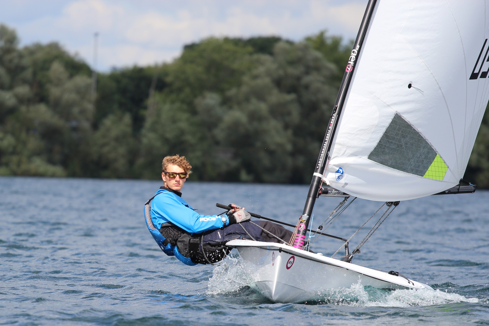
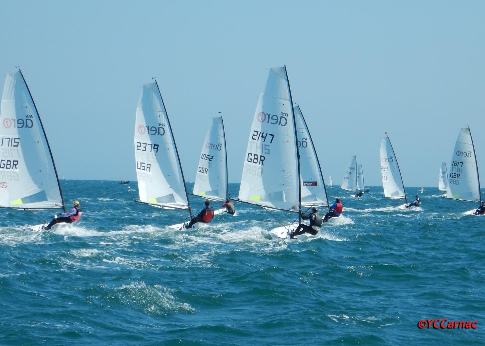

Sailing
Here's a small collection of my sailing expereince




| Result | Event |
|---|---|
| 1st | RS Aero North Americans 5 Rig 2019 |
| 21st | 2nd Youth | RS Aero Worlds 2017 |
| 6th | RS Aero UK Youth Championships 2017 |
Over the last 5 years, I have competed in 3 World Championships, 2 North American championship, 1 UK youth national championships and 1 US national championships. In 2017, I placed 2nd Youth in the World RS Aero series (France) and in 2019, I placed 1st in my fleet (division) in the North American Championships.
I also hold a FFV (Fédération Française de Voile/French Federation of Sailing) intructors licence. To obtain this, I had to get CPR-First aid certification in France, the French Motor Boat Permit, and completed 3 weeks of training.